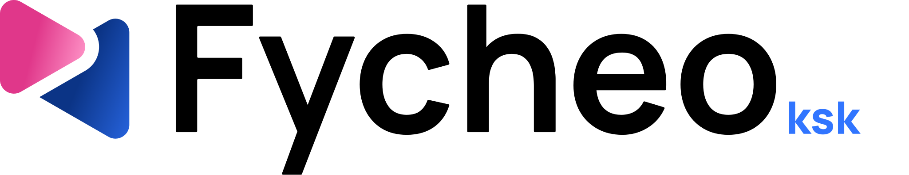

Fichar es un gesto de un segundo, y la marca no lo complica
Fycheo convierte en marca el verbo de todos los días. Compite con hojas de Excel y con herramientas de recursos humanos grandes, así que tiene que parecer igual de seria, pero mucho más sencilla de usar.
Dos flechas que se encuentran: la que entra y la que sale
La rosa apunta hacia delante y la azul vuelve. Cuando están juntas, la rosa recorta a la azul con su sombra; cuando se separan, cada una es un triángulo entero. En movimiento, cada flecha avanza siempre hacia donde apunta.
- La rosaDegradado de #E0378A a #FC8CC2. Entra desde la izquierda.
- La azulDegradado de #0B3486 a #3175FE. Entra desde la derecha.
- La sombraUn hueco de 32 px que mantiene las dos piezas legibles incluso en el favicon.
Siete aplicaciones, un solo apellido corto para cada una
Cada aplicación lleva el logotipo principal con un apellido en azul, para que nadie dude de en cuál está.


Claro, oscuro y un símbolo que se reconoce a 16 píxeles
El color: rosa y azul de firma, azul vivo para actuar
El rosa y el azul del símbolo casi siempre van en degradado. En la interfaz manda un azul más vivo para las acciones, sobre una base de azules noche, y tres colores de estado cuentan qué ha pasado con cada fichaje.
Una sola letra, hecha para leer la hora de un vistazo
Manrope, redonda y abierta, con cifras de ancho fijo: la hora y los saldos no bailan cuando cambian. Inter queda solo para textos largos, como guías y textos legales.
Manrope ExtraBold, con cifras tabulares.
- Título
- Planificación de turnos
- Texto
- Tu jornada de hoy: 8 h, con 30 min de descanso.
- Detalle
- Fichaje registrado con ubicación. Se conserva 4 años.
Modo oscuro, y solo brilla lo que hay que pulsar
Es el que mejor funciona en una tablet de quiosco encendida todo el día. Las superficies son capas de azul noche y el botón principal es el único que brilla.
- Un gesto principal por pantalla: en la app del empleado, fichar; en el panel, aprobar o planificar.
- Radios generosos, de 8 a 24 px según el tamaño de la pieza, como las esquinas del símbolo.
- Iconos de Material Symbols, con un solo estilo de trazo en todas las aplicaciones.
La marca, trabajando
El panel de gestión, el quiosco de fichaje, la web comercial y la app del empleado.